14 Anexo I - Exemplo séries temporais
14.1 Exemplo 1
O arquivo sinasc_regiao.csv que pode ser acessado neste link contém dados de nascidos vivos extraídos do Tabnet/Datasus de Janeiro de 2009 a Dezembro de 2019.
Vamos ler o dados e transformar para poder criar objetos de séries temporais!
Pacotes necessários:
library(tidyverse)
library(forecast)Repare na estrutura do dado original:
"mes_ano_nascimento";"Norte";"Nordeste";"Sudeste";"Região Sul";"Centro-Oeste";"Total"
"Janeiro/2009";26648;72111;95645;32333;18782;245519
"Fevereiro/2009";23469;66464;93223;30003;17977;231136
"Março/2009";27182;81857;106103;33719;20642;269503
"Abril/2009";26301;77398;101227;30901;19698;255525
"Maio/2009";25829;76873;94268;30345;18764;246079
"Junho/2009";25186;72751;90821;30096;17798;236652
"Julho/2009";25183;71058;92456;30789;17983;237469Como podemos ver acima, teremos de executar alguns passos antes para preparar o dado:
- O arquivo é um CSV separado por ; (csv2)
- A primeira variável mes_ano_nascimento é composta do mês e do ano separados por /
- Em seguida temos os valores para cada Região do país e o total
sinasc <- read_csv2("https://gitlab.procc.fiocruz.br/oswaldo/eco2019/-/raw/master/dados/sinasc_regiao.csv") %>%
janitor::clean_names() %>%
mutate(separa = str_split(mes_ano_nascimento, "/")) %>%
unnest_wider(separa, names_sep = "_") %>%
rename(mes = separa_1, ano = separa_2) %>%
select(ano, mes, norte:total)A função clean_names() do pacote janitor, como o nome indica, faz uma limpeza nos nomes das colunas removendo espaço, acentos etc…
Em seguinda usamos a função str_split() para quebra a variável mes_ano_nascimento em duas partes, separa_1 e separa_2 que em seguida recebem os nomes de mês e ano. Também pode ser utilizada a função separate(), do pacote dplyr. Por fim, temos um arquivo com a seguinte estrutura:
| ano | mes | norte | nordeste | sudeste | regiao_sul | centro_oeste | total |
|---|---|---|---|---|---|---|---|
| 2009 | Janeiro | 26648 | 72111 | 95645 | 32333 | 18782 | 245519 |
| 2009 | Fevereiro | 23469 | 66464 | 93223 | 30003 | 17977 | 231136 |
| 2009 | Março | 27182 | 81857 | 106103 | 33719 | 20642 | 269503 |
| 2009 | Abril | 26301 | 77398 | 101227 | 30901 | 19698 | 255525 |
| 2009 | Maio | 25829 | 76873 | 94268 | 30345 | 18764 | 246079 |
| 2009 | Junho | 25186 | 72751 | 90821 | 30096 | 17798 | 236652 |
Agora nosso dado foi importado e organizado, podemos criar um objeto do tipo ts. Vamos usar o total de nascidos vivos no país (coluna total).
Para isso vamos usar a função ts() e informar o ano e mês do inicio da série usando o parâmetro start, e a periodicidade da série usando frequency.
sinasc.ts <- ts(sinasc$total, start = c(2009, 1), frequency = 12)Veja a tabela abaixo para saber o valor da frequência a ser usado:
| Frequência | Tipo |
|---|---|
| 1 | Anual |
| 2 | Semestral |
| 3 | Quadrimestral |
| 4 | Trimestral |
| 12 | Mensal |
| 52 * | Semanal |
| 365 * | Diário |
Atenção!!! Lembrando: Não é possível fazer decomposição de séries irregulares e nem de séries anuais.
Observação
Devido aos anos bissextos, na verdade temos 365.25 dias em cada ano (a cada 4 anos temos 1 dia extra, o dia 29 de fevereiro). Portanto, o número de semanas seria 365.25/7 = 52.18. As séries de tempo regulares que vimos no curso não permitem trabalhar com frequências fracionárias.
Vamos agora inspecionar a série criada:
sinasc.ts Jan Feb Mar Apr May Jun Jul Aug Sep Oct Nov Dec
2009 245519 231136 269503 255525 246079 236652 237469 232761 245676 233188 219215 228858
2010 240239 229285 268429 248175 252882 239837 241655 231242 236080 229155 216890 227999
2011 241340 232583 270964 254299 267725 249989 245348 239623 231749 226337 222808 230395
2012 239599 237805 266629 248213 257403 240376 243055 238382 235670 239381 225932 233344
2013 245038 229857 255273 256677 262954 242410 246175 238436 236846 236042 222491 231828
2014 247111 237191 259821 259256 265272 247922 255904 244716 247983 238208 230385 245490
2015 253833 239707 277540 263592 269032 252239 252396 244966 250849 239945 230672 242897
2016 246388 241133 267249 256752 262413 246322 241194 232083 226505 217018 204074 216669
2017 226414 223515 266965 252941 269777 254808 249008 244608 237644 233926 229578 234351
2018 248735 230349 264342 262426 268724 245608 246705 243961 237043 237490 228568 230981
2019 246048 232779 257871 250164 257068 236360 240490 233817 233289 225172 214454 221634Para fazer um gráfico da série basta usar a função plot():
plot(sinasc.ts)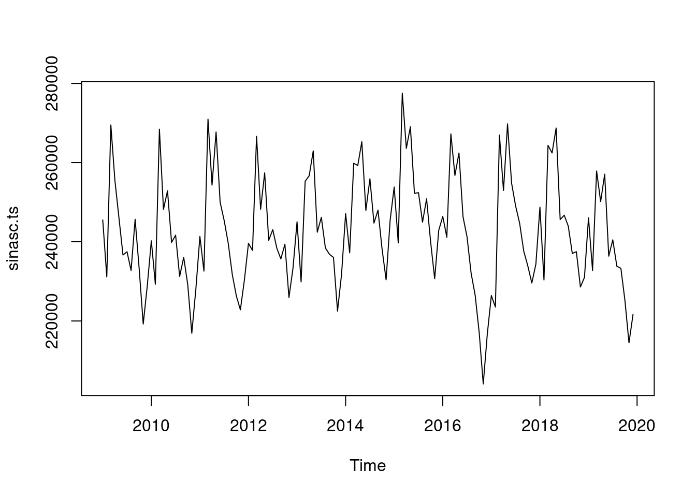
Verificando a tendência:
boxplot(sinasc.ts ~ trunc(time(sinasc.ts)))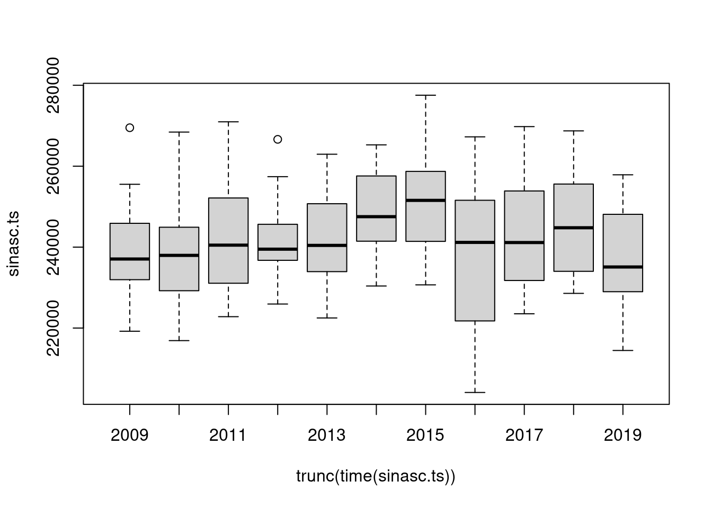
E a sazonalidade:
boxplot(sinasc.ts ~ cycle(sinasc.ts), names = month.abb)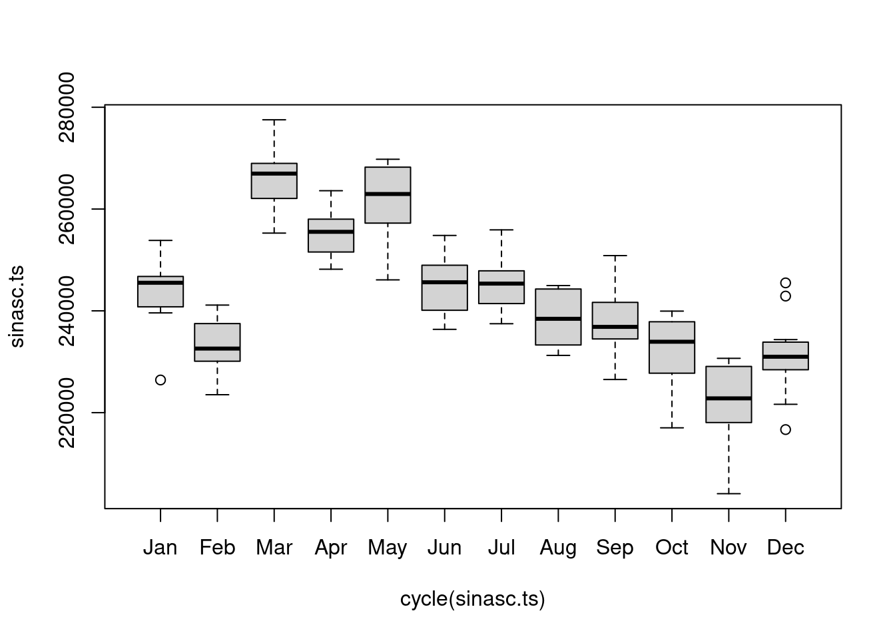
Outra função que nos permite explorar a sazonalidade é a monthplot():
monthplot(sinasc.ts)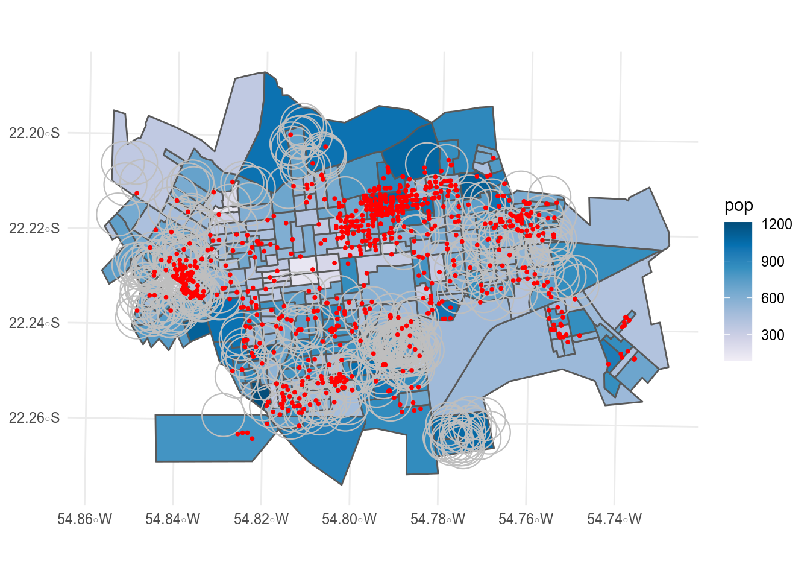
A decomposição da serie por Loess pode ser obtida com o comando abaixo:
plot(stl(sinasc.ts, "periodic"))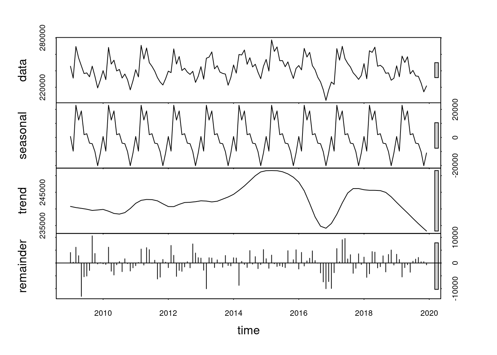
Gráfico da série com uma suavização usand o método de Tukey:
plot(sinasc.ts, col = "gray")
lines(smooth(sinasc.ts), col = 2, lwd = 3)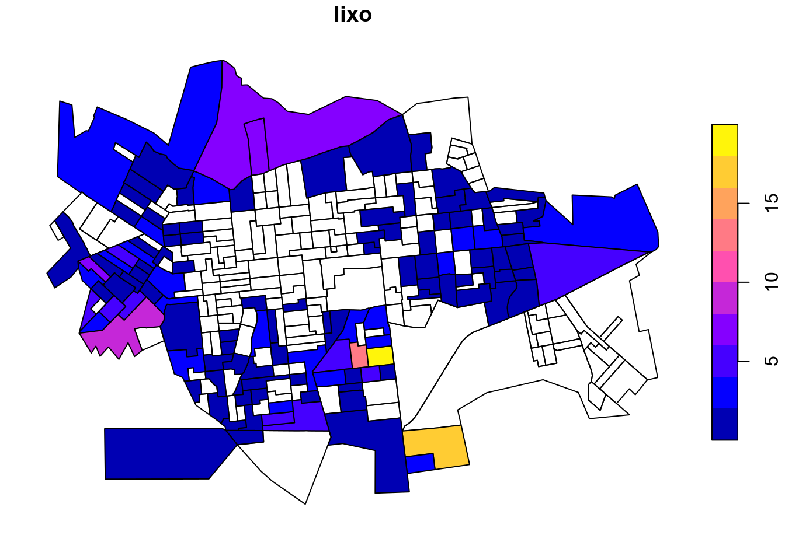
Existem várias outras funções de suavização que podem ser exploradas tais como:
runmed(medianas moveis);lowess,loess;supsmu;smooth.spline.
no gráfico abaixo usamos a função loess.smooth() com dois tamanhos de janelas para capturar a tendência e a sazonalidade:
plot(sinasc.ts, col = "gray")
lines(loess.smooth(time(sinasc.ts), sinasc.ts, span = 0.4),
col = 4, lwd = 3)
lines(loess.smooth(time(sinasc.ts), sinasc.ts, span = 0.15),
col = 2, lwd = 3)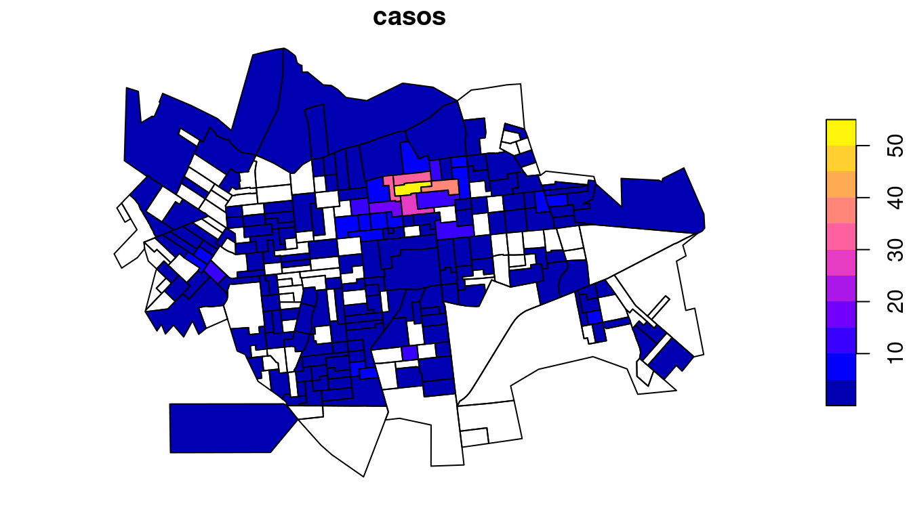
Para obter as funções de autocorrelação e autocorrelação parcial use acf e pacf:
acf(sinasc.ts, 24)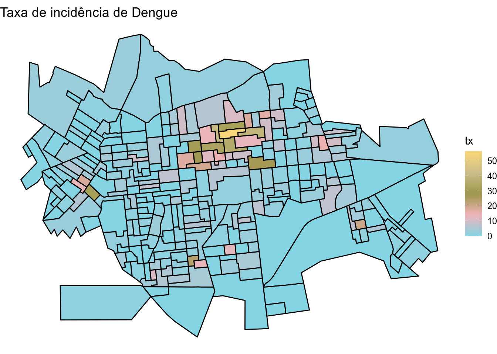
pacf(sinasc.ts, 24)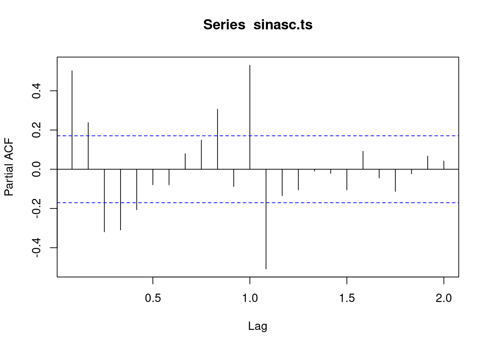
Ajustando um modelo automático de ARIMA usando a função auto.arima do pacote forecast para os dados dos nascidos vivos para o Brasil:
mod <- auto.arima(sinasc.ts)
summary(mod)Series: sinasc.ts
ARIMA(4,0,0)(2,1,0)[12]
Coefficients:
ar1 ar2 ar3 ar4 sar1 sar2
0.536 0.153 0.364 -0.334 -0.508 -0.359
s.e. 0.089 0.094 0.096 0.086 0.098 0.097
sigma^2 estimated as 26337757: log likelihood=-1196
AIC=2405 AICc=2406 BIC=2425
Training set error measures:
ME RMSE MAE MPE MAPE MASE ACF1
Training set 25.87 4769 3564 -0.01919 1.465 0.5139 0.03548Veja o modelo ajustado acima. Olhando a função de autocorrelação e autocorrelação parcial, você iria imaginar que este seria o melhor modelo?
tsdiag(mod)Criando o modelo predito para os proximos 2 periodos (12x2), ou seja, 2 anos nesse caso. Podemos selecionar o número de meses usando o parametro h na função forecast.
pred <- forecast::forecast(mod)
plot(pred, main = "Predito para 2020 e 2021")
14.2 Exemplo 2
Vamos realizar uma análise de séries temporais usando os pacotes tsibble e feasts que implementa um suporte a séries temporais no estilo do tidyverse, permitindo novas análises e gráficos via ggplot2.
O primeiro passo é carregar os pacotes necessários:
library(tsibble)
library(feasts)Vamos apenas converter a nossa série sinasc.ts usando a função as_tsibble():
sinasc.tb <- as_tsibble(sinasc.ts)Podemos usar as funções gg_season e gg_subseries para explorar os compoentes de tendência e sazonalidade presentes no dado:
gg_season(sinasc.tb)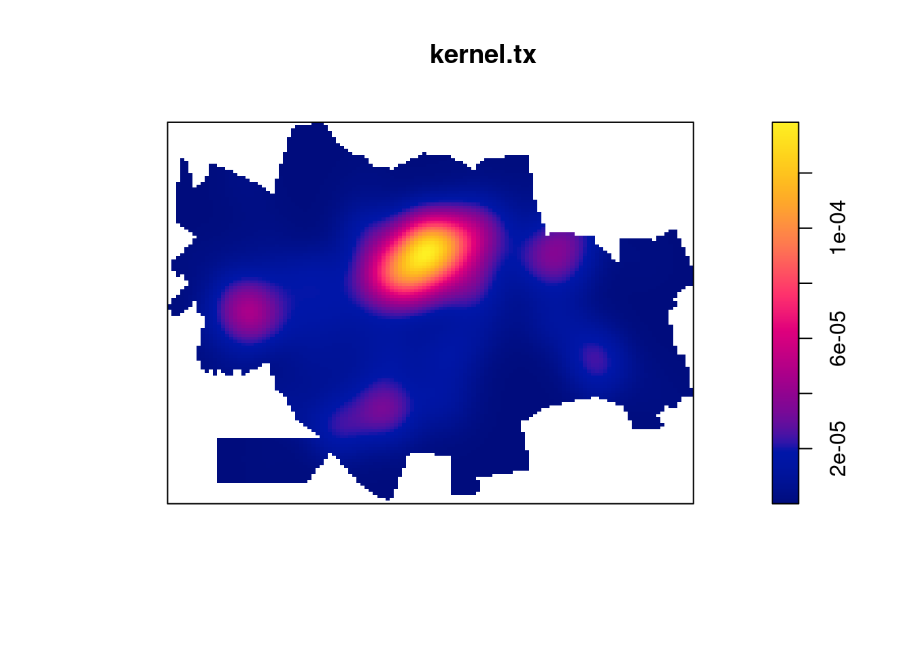
gg_subseries(sinasc.tb)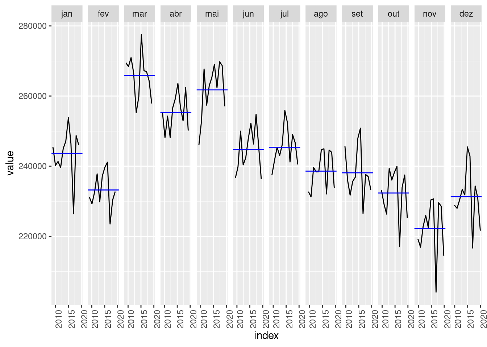
Obtendo os gráficos da ACF e PACF:
autoplot(ACF(sinasc.tb))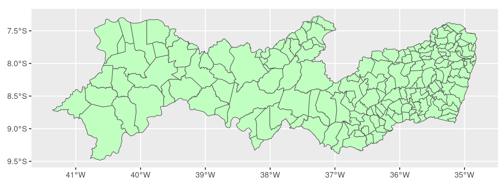
autoplot(PACF(sinasc.tb))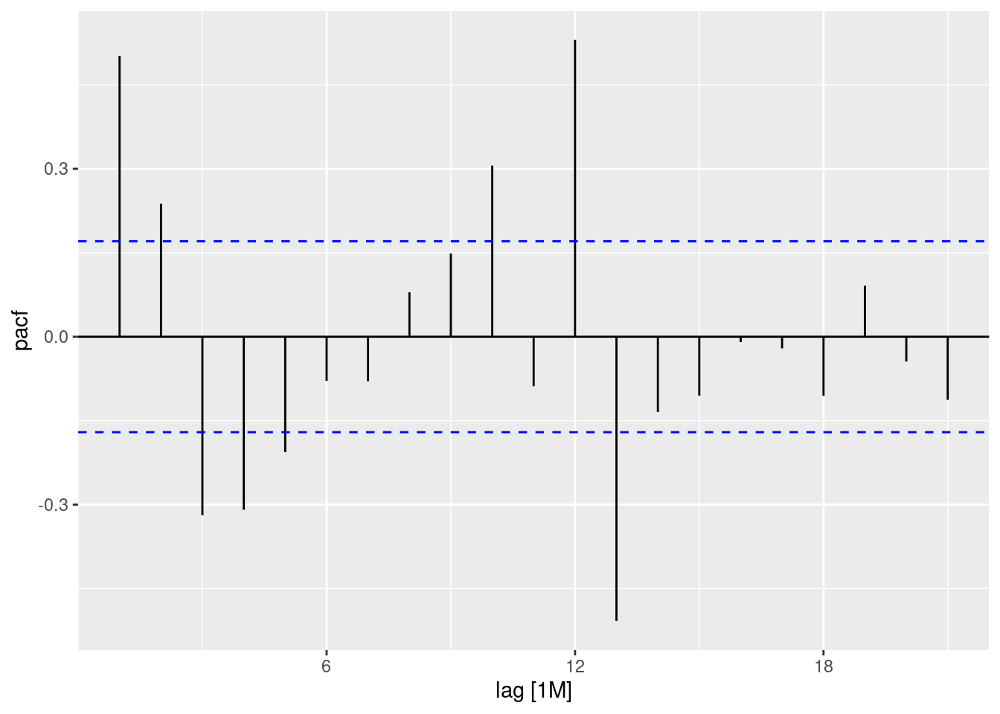
A função STL que faz a decomposição da série usando loess no pacote feast é mais complexa que a que vimos no curso, e permite extrair outros parâmetros. Abaixo rodamos essa função de um jeito semelhante a que vimos no curso.
sin.ft <- sinasc.tb %>%
model(STL(value ~ season(window = "periodic"))) %>%
components()Visualizando o resultado:
sin.ft %>%
select(-.model)## # A tsibble: 132 x 6 [1M]
## index value trend season_year remainder season_adjust
## <mth> <dbl> <dbl> <dbl> <dbl> <dbl>
## 1 2009 jan 245519 240750. 686. 4083. 244833.
## 2 2009 fev 231136 240578. -9737. 295. 240873.
## 3 2009 mar 269503 240407. 22947. 6150. 246556.
## 4 2009 abr 255525 240292. 12386. 2847. 243139.
## 5 2009 mai 246079 240177. 18905. -13003. 227174.
## 6 2009 jun 236652 240045. 1972. -5365. 234680.
## 7 2009 jul 237469 239912. 2646. -5089. 234823.
## 8 2009 ago 232761 239730. -4065. -2904. 236826.
## 9 2009 set 245676 239548. -4453. 10582. 250129.
## 10 2009 out 233188 239617. -10137. 3708. 243325.
## # … with 122 more rowsUm gráfico também semelhante:
sin.ft %>%
autoplot()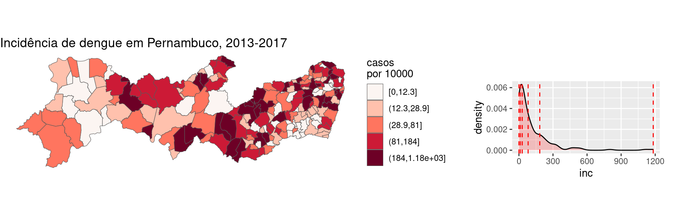
Algumas das métricas retornadas pela função STL:
sin.ft %>%
features(value, feat_stl) %>%
select(-.model) %>%
pivot_longer(1:9) %>%
mutate(value = round(value, 4))# A tibble: 9 × 2
name value
<chr> <dbl>
1 trend_strength 6.06e- 1
2 seasonal_strength_year 9.07e- 1
3 seasonal_peak_year 3 e+ 0
4 seasonal_trough_year 1.1 e+ 1
5 spikiness 3.72e+10
6 linearity 4.82e+ 3
7 curvature -2.73e+ 4
8 stl_e_acf1 2.8 e- 1
9 stl_e_acf10 3.60e- 1Para saber mais sobre os valores retornados pela função STL clique AQUI.
O gráfico abaixo mostra a força da tendência versus a força da sazonalidade:
ft <- sin.ft %>%
features(value, feat_stl)
ggplot(ft, aes(x = trend_strength, y = seasonal_strength_year,
colour = "red")) + geom_point(size = 4) + coord_equal() +
lims(x = c(0, 1), y = c(0, 1)) + xlab("Força da tendência") +
ylab("Força da sazonalidade") + theme_light() +
theme(legend.position = "none")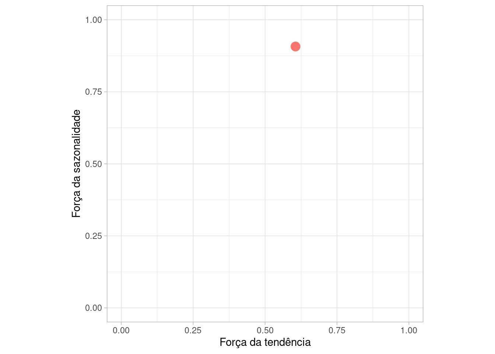
14.3 Exemplo 3
Para ilustrar o uso destes pacotes vamos utilizar uma série temporal multivariada usando os dados do SINASC por Região do País.
O primeiro passo é criar uma nova variável nos dados do SINASC chamada data, que é feita a partir de uma sequência de datas mensais. Note o uso da função yearmonth para criar um objeto específico desse pacote que suporta datas na estrutura mês/ano.
sinasc <- sinasc %>%
mutate(data = yearmonth(seq(as.Date("2009-01-01"),
as.Date("2019-12-01"), by = "1 month")))head(sinasc %>%
select(-total))# A tibble: 6 × 8
ano mes norte nordeste sudeste regiao_sul centro_oeste data
<chr> <chr> <dbl> <dbl> <dbl> <dbl> <dbl> <mth>
1 2009 Janeiro 26648 72111 95645 32333 18782 2009 jan
2 2009 Fevereiro 23469 66464 93223 30003 17977 2009 fev
3 2009 Março 27182 81857 106103 33719 20642 2009 mar
4 2009 Abril 26301 77398 101227 30901 19698 2009 abr
5 2009 Maio 25829 76873 94268 30345 18764 2009 mai
6 2009 Junho 25186 72751 90821 30096 17798 2009 junEm seguida vamos transformar o dado em um formato longo:
sinasc.long <- sinasc %>%
pivot_longer(cols = norte:total, names_to = "regioes",
values_to = "nasc")head(sinasc.long)# A tibble: 6 × 5
ano mes data regioes nasc
<chr> <chr> <mth> <chr> <dbl>
1 2009 Janeiro 2009 jan norte 26648
2 2009 Janeiro 2009 jan nordeste 72111
3 2009 Janeiro 2009 jan sudeste 95645
4 2009 Janeiro 2009 jan regiao_sul 32333
5 2009 Janeiro 2009 jan centro_oeste 18782
6 2009 Janeiro 2009 jan total 245519E por fim, em um objeto tsibble, os valores do total, pois já modelamos no exemplo 2:
sinasc.tb <- as_tsibble(sinasc.long, key = regioes,
index = data, regular = TRUE) %>%
filter(regioes != "total")Plotando as séries de cada região:
ggplot(sinasc.tb, aes(x = data, y = nasc, group = regioes)) +
geom_line(aes(color = nasc)) + geom_smooth(se = F) +
facet_wrap(~regioes, scales = "free_y") + scale_color_binned(type = "viridis",
name = "Nascidos Vivos") + theme_light() + theme(legend.position = "bottom",
legend.key.size = unit(0.5, "cm"), legend.key.width = unit(2,
"cm"))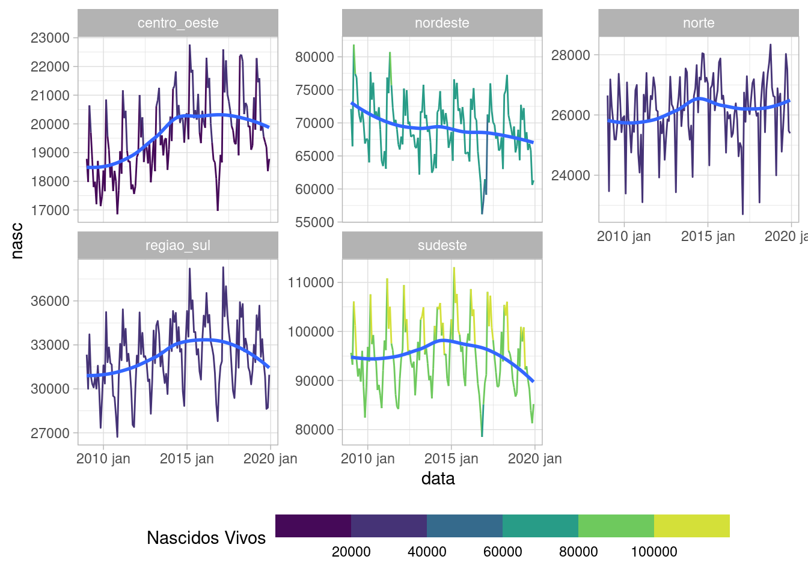
Verificando as tendências:
sinasc.tb %>%
gg_season(nasc)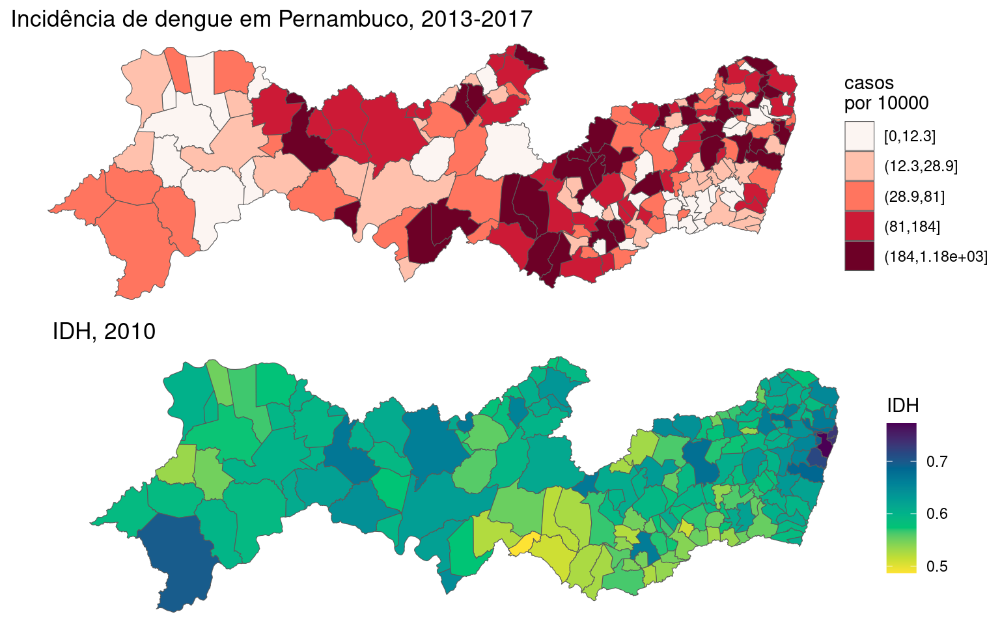
E a sazonalidade:
sinasc.tb %>%
gg_subseries(nasc)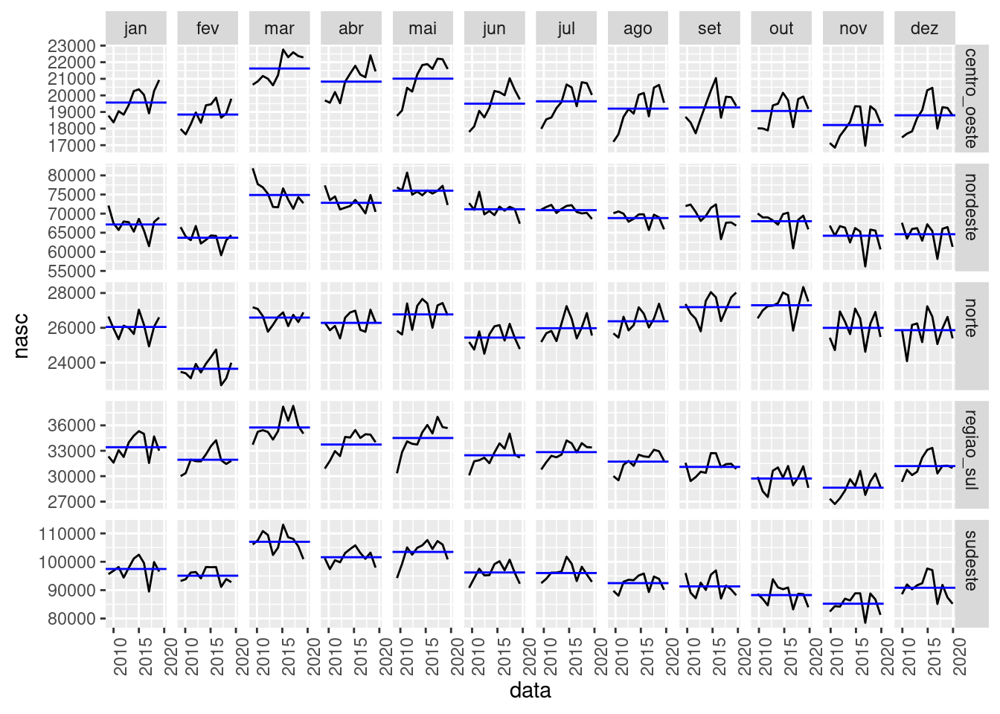
Observe os padrões acima, alguma região chama sua atenção?
Verifique também as ACF:
sinasc.tb %>%
ACF(nasc) %>%
autoplot()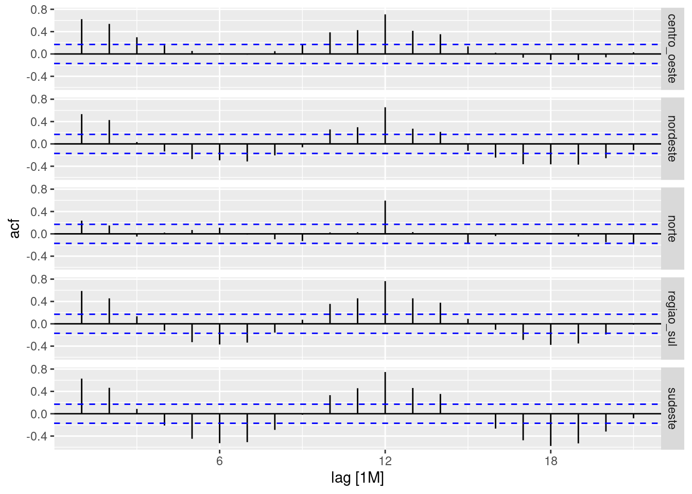
decomp <- sinasc.tb %>%
model(STL(nasc ~ season(window = Inf)))Plotando somente as STL para o Sudeste e Nordeste, algo chama sua atenção? Caso queira, modifique para ver todas as regiões ou alguma outra que ache interessante.
components(decomp) %>%
filter(regioes %in% c("nordeste", "sudeste")) %>%
autoplot() + theme(legend.position = "bottom")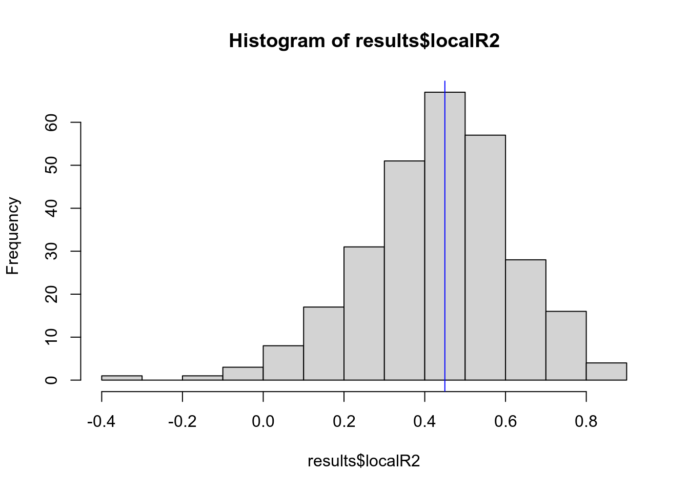
Por fim, um gráfico comparando a força das tendências e sazonalidades em cada região. Identifique para quais regiões a sazonalidade é mais importante e para quais a tendência importa mais!
sinasc.feat <- sinasc.tb %>%
features(nasc, feat_stl)
ggplot(sinasc.feat, aes(x = trend_strength, y = seasonal_strength_year)) +
geom_point(color = "red", size = 3) + xlim(0.5,
0.9) + ylim(0.8, 0.95) + coord_equal() + facet_wrap(vars(regioes),
scales = "fixed") + xlab("Força da tendência") +
ylab("Força da Sazonalidade") + theme_light() +
theme(legend.position = "none")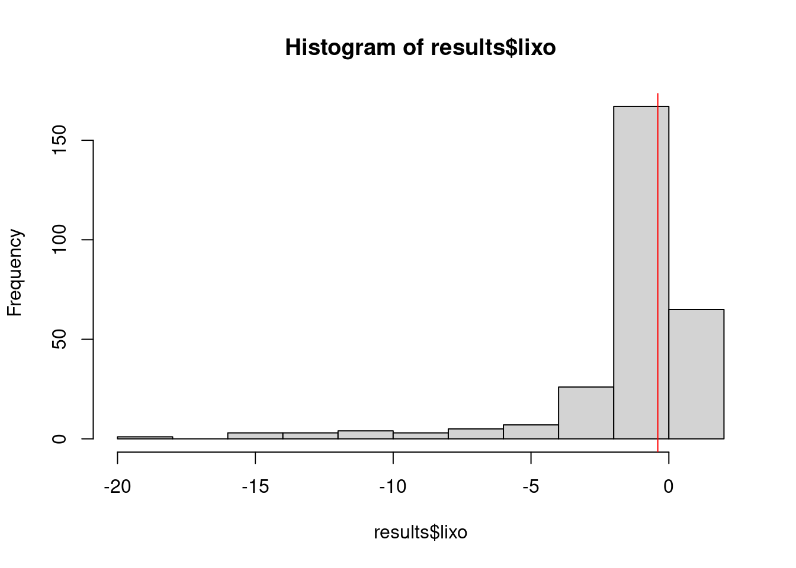